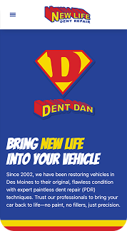
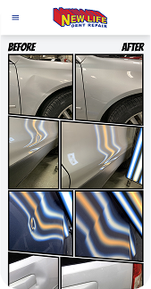
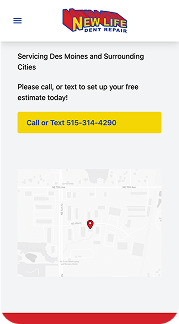
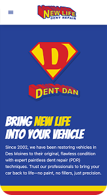
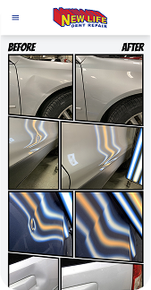
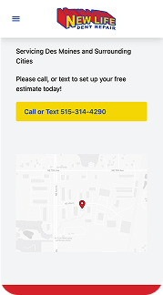

Projects
New Life Dent Repair
New Life Dent Repair is a paintless dent removal business located in Ankeny, Iowa. I redesigned their website and refreshed their branding to better reflect their unique superhero-themed identity. Additionally, I managed their social media launch and grew their follower count by over 100 within the first month.
 





BK Slayz Nailz
BK Slayz Nails is a woman-owned nail studio focused on delivering high-quality beauty services. I worked closely with the owner to create a unique logo and brand identity that reflected her style and the spirit of her business. The final design was crafted and refined in Adobe Illustrator to achieve a clean, professional look.
Product Design
I developed two unique product concepts to explore visual branding and packaging. The first was an energy drink brand targeting young adults, featuring a bold, modern design created in Illustrator and brought to life with Photoshop mockups. The second was a fall-themed “Pumpkin Serum,” where I focused on creating a warm, seasonal feel through thoughtful color choices, typography, and layout.
Marketing and Print Media
As part of a class project, I designed a new set of menus for a high-end Chinese restaurant, staying true to its brand and traditional cuisine. I created a custom cocktail menu and original illustrations to enhance the dining experience, using Adobe Illustrator and InDesign to deliver a visually consistent design.
Logo Design
I created a logo for a fictional graphic design studio as part of a branding exercise. The goal was to develop a strong, eye-catching identity with a clear concept behind it. I finalized the design in Adobe Illustrator to keep it clean and professional.